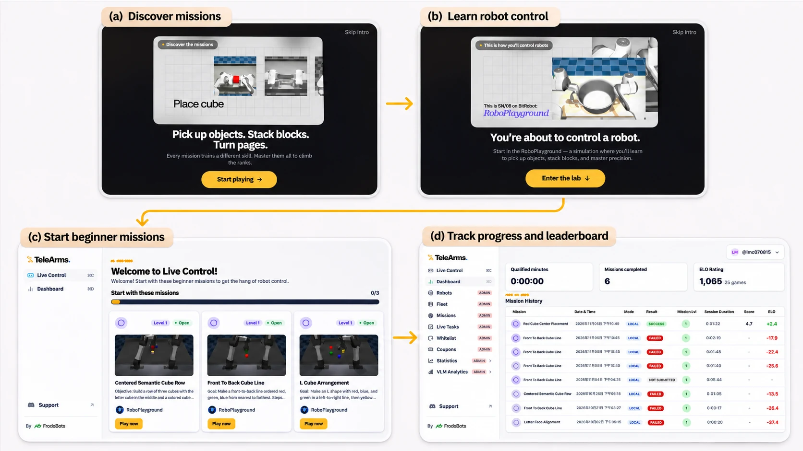
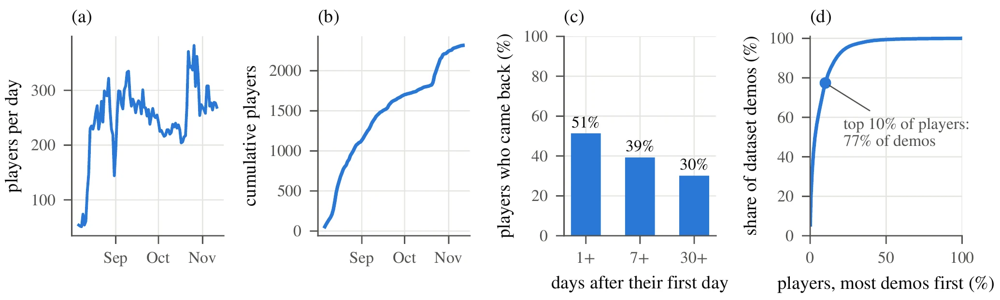
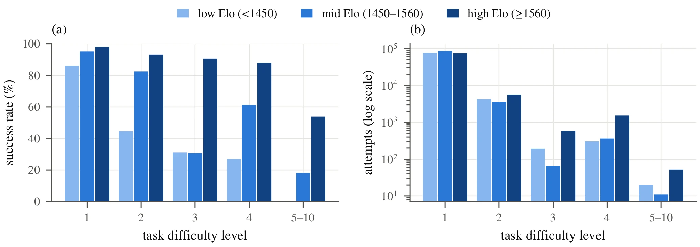
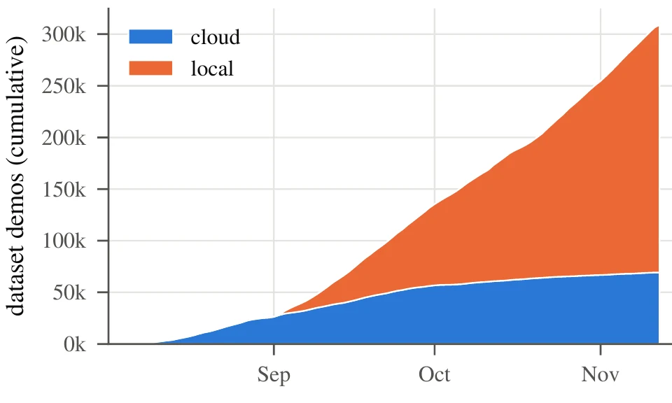
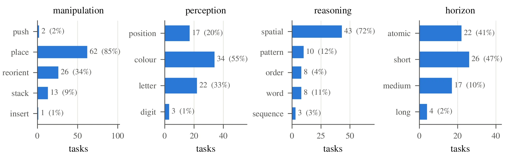
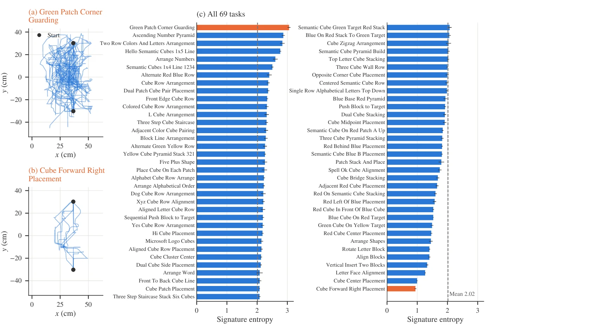
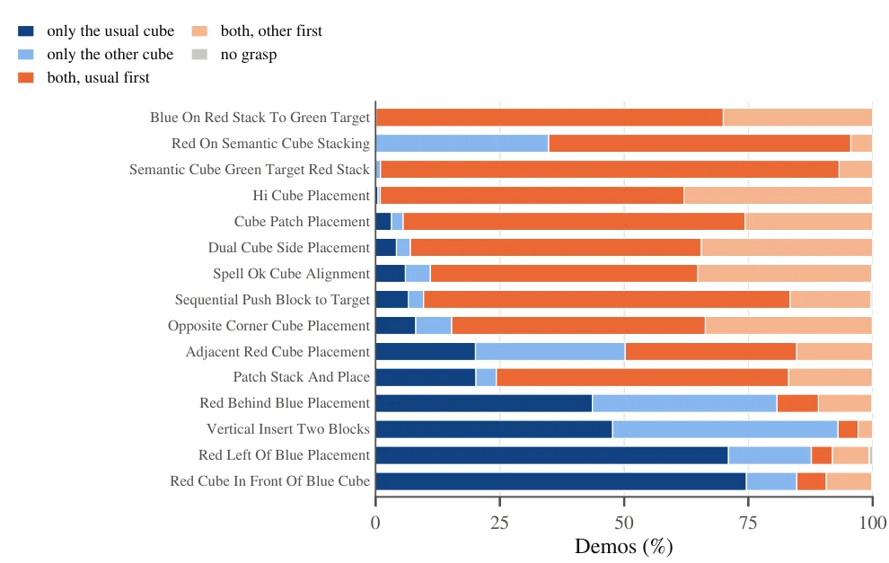
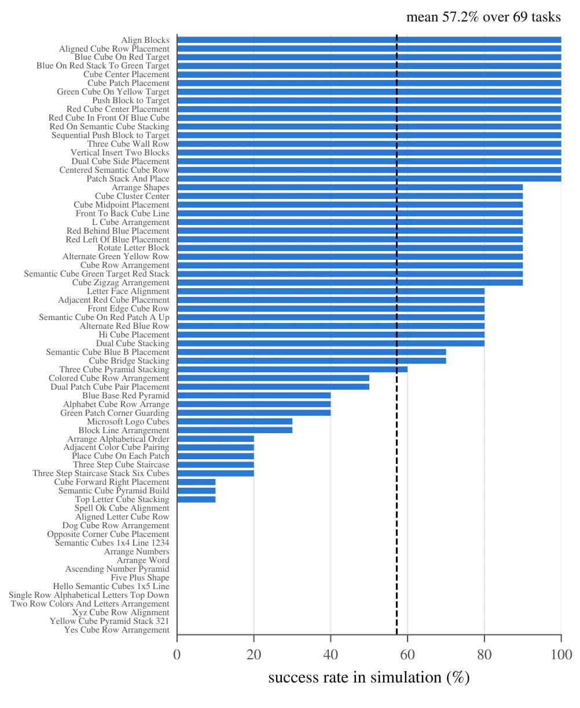
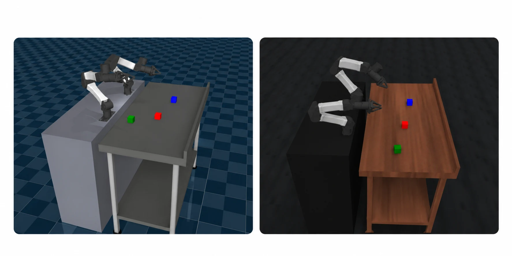

RoboPlayground GO!
Scaling Robot Learning Through Gamified Data Collection
Abstract
Robot data is scarce. Gamers are not.
Collecting large and diverse robot manipulation data is still a major bottleneck for learning policies that generalize. Existing approaches usually need specialized hardware, trained operators and repetitive demonstrations, which limits who can contribute and how much data can be collected.
We introduce RoboPlayground GO!, a gamified platform where anyone can contribute robot learning data by playing simulated manipulation tasks. It builds on RoboPlayground's open-ended task generation framework and combines a growing library of manipulation challenges with keyboard teleoperation, Elo-based player ratings, progressive difficulty and gameplay incentives. Through the platform we collected 309,119 demonstrations (3,489 hours) from 1,526 players across 69 tasks. We then study how to use this large, imperfect and varied data for policy learning, comparing data-selection strategies in and out of distribution and transferring policies from simulation to a real robot.
Straight from the dataset
Real players. Real demos.
Every clip below is a real human demonstration from the TeleArms dataset, replayed in simulation and played back at 1.5–2× speed. Hover over a clip to read its instruction.
The platform
A robot lab that runs in your browser.
Players sign up, finish a short walkthrough and start with beginner missions. Harder tasks unlock as they go, and a dashboard shows their hours, mission history, Elo rating and leaderboard rank.

Local play
MuJoCo-WASM runs the simulation on the player's own machine. There is no streaming lag and no server queue, and every reported success is replayed and verified on our servers.
Elo ratings
Players and tasks are rated against each other with Glicko-2. Higher-rated players succeed more often and finish faster, so the rating doubles as a data-quality signal.
Keyboard first
Each arm translates along three axes and rotates in yaw, pitch and roll. Keyboard, Xbox gamepad and Nintendo Joy-Con are all supported, but nearly everyone plays with a keyboard.
Engagement
People come back. And they get better.
After the public launch in early August, about 250 people played on an average day. 51% of players return after their first day and 30% are still playing a month later. The top 10% of players contribute 77% of all demonstrations.


Elo predicts skill
Hover over a rating band to see its numbers. Players who completed 15–20 games and later 200–220 games rose from a mean Elo of 1357 to 1459.
The TeleArms dataset
From gameplay to training data.
Each successful attempt is replayed in simulation at 30 Hz, trimmed and checked again. It is then rendered three times with increasing domain randomization, and synthetic colour and letter variants are added. The result is a 30 Hz LeRobot dataset with 1.12M trajectories and 1.35 billion frames.
From game attempts to training trajectories
Hover over a flow for detailsOne demo, three renders
Every human demonstration is replayed and rendered three times with more and more randomization, so policies learn from the same motion in different-looking scenes. The three views stay in sync when you switch render.
Synthetic variants: same motion, new task
The robot actions stay identical. Only the cube colours, patch colours or letters are remapped, and the instruction is rewritten to match (changed words are highlighted). This adds 197,543 trajectories with no extra human play.


Comparison
The largest non-expert bimanual dataset in simulation.
Most large manipulation datasets come from experts in a lab. RoboPlayground GO! collects data from anyone with a browser and a keyboard.
Scale compared with other manipulation datasets
Log scale. Datasets that don't report a number are left out of that view.
Show the full comparison table
| Dataset | Data | Robot | Interface | People | Episodes | Hours | Tasks | Failures |
|---|---|---|---|---|---|---|---|---|
| Crowdsourced or non-expert collection | ||||||||
| RoboTurk | Sim | Sawyer | Smartphone | — | 2.2k | 137.5 | 2 | — |
| RoboTurk Real | Real | Sawyer | Smartphone | 54 | 2.144k | 111 | 3 | — |
| RoboCrowd | Real | ALOHA (bimanual) | Puppeteering | 231 | 0.817k | — | 6 | Quality labels |
| RoboCade | Real | Franka FR3 | Web + GELLO | — | 0.910k | — | 6 | — |
| AXIS V2 | Sim | Franka FR3 | Browser | — | 2,350k† | — | 1,092 | — |
| Expert or lab collection | ||||||||
| robomimic MH | Sim | Panda (1–2 arms) | Smartphone | 6 | 1.2k | — | 4 | ✗ |
| DROID | Real | Franka Panda | VR | 50 | 76k | 350 | 86 | ✓ (16k) |
| RoboMIND | Real | 4 embodiments | Teleop | — | 107k | 305.5 | 479 | ✓ (5k) |
| AgiBot World | Real | Dual-arm humanoid | Teleop | — | 1,000k | 2,976 | 217 | ✓ |
| RoboCasa365 | Sim | Mobile Panda | Teleop | — | 55k (+600k) | 612 (+1,615) | 365 | — |
| RoboPlayground GO! (ours) | Sim | YAM (bimanual) | Browser game | 1,526 | 309,119 (+815,781) | 3,489 (+9,044) | 69 | Stored |
Numbers in parentheses are generated or augmented data. † Includes camera-augmented episodes, not only independent human demonstrations.
Behavioural diversity
Same task, many ways to solve it.
We measure trajectory diversity with signature entropy. Across the 69 tasks it ranges from 0.94 to 3.06, which corresponds to about 3 to 21 distinct strategies per 150 demonstrations. Players also disagree on which cube to move first, unless the task fixes the order.


Experiments
More data helps. Better data helps more.
We fine-tune π0.5 on 10 tasks with different amounts and selections of gameplay data, and evaluate in simulation with 50 episodes per task. Besides success, we report a Demo Score that rates each rollout against human demonstrations on completion, efficiency, smoothness and safety.
Scaling with demos per task
Success rises from 73.6% at 50 demos per task to 90.0% at 500, then levels off. The four harder tasks gain the most, from 48.0% to 78.5%.
Data selection at 1,500 demos per task
Selecting by Demo Score gives the best results: 95.2% success vs. 90.2% for random selection, and 93.0% vs. 76.5% on the four harder tasks.
Out-of-distribution axes
Drag the slider to compare a training-distribution scene with its perturbed version. Each axis changes exactly one thing. Two more axes change no pixels: Lang paraphrases the instruction and Physics lowers cube friction to 0.3×.

Can a frontier model play zero-shot?
We ran GPT-6 Astra as a zero-shot policy and compared it with π0.5 fine-tuned on our data, using 4 tasks and 10 episodes each. Astra solves the easy tasks but nearly fails the ones that require picking up and turning a cube. It is also 10–23× slower and costs $173.64 for 40 episodes.
| Task | Astra success | π0.5 success | Astra time (s) | π0.5 time (s) | Cost (USD) |
|---|---|---|---|---|---|
| Red Left Of Blue Placement | 10/10 | 10/10 | 99 | 9 | 5.64 |
| Cube Patch Placement | 10/10 | 10/10 | 263 | 17 | 11.54 |
| Semantic Cube On Red Patch A Up | 1/10 | 5/10 | 308 | 31 | 81.76 |
| Letter Face Alignment | 1/10 | 7/10 | 829 | 36 | 74.70 |
| Total | 22/40 | 32/40 | — | — | 173.64 |
Open resources
TeleArms-Gym and offline RL datasets.
We release a Gymnasium environment with 100 real and synthetic tasks for post-training and RL research. It offers image or privileged-state observations, sparse or dense subtask rewards, and the same three visual augmentations as the dataset.

| Tasks | Observation | Episodes | Steps | Size (GB) |
|---|---|---|---|---|
| 10 | image | 36.4K | 28.1M | 58.7 |
| 10 | state | 36.4K | 28.1M | 10.0 |
| 100 | image | 323.5K | 386.5M | 820.3 |
| 100 | state | 323.5K | 386.5M | 122.9 |
Image datasets use LeRobot format with three 224×224 cameras plus proprioception. State datasets use Minari format and can be reloaded directly into the Gym. Actions are 14-dim absolute joint targets at 30 Hz.
Citation
BibTeX
@article{roboplaygroundgo2026,
title = {RoboPlayground GO!: Scaling Robot Learning Through Gamified Data Collection},
author = {Anonymous},
journal = {arXiv preprint},
year = {2026}
}